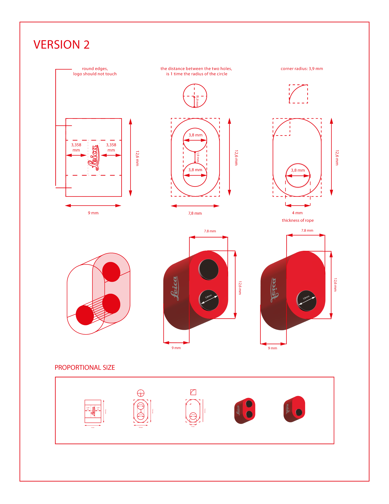
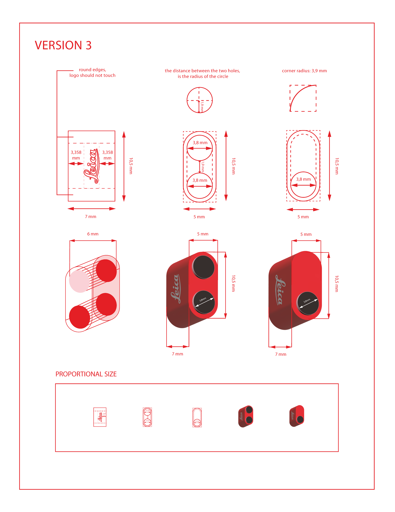

Human-first NLP · People MatchingBuilding enough safety for someone to type the thing they actually want.

- Role
- Lead designer — solo
- Scope
- MVP · design to handoff
- Practice
- Product Design · Human-AI Interaction
Brown noise plays a steady low tone that can help with focus. It stays off until you turn it on.
Currently Szombathely, Hungary — open to relocation
Seven+ years across design, now in safety-critical AI. Looking for product design roles in AI, robotics, healthtech and mental health.


Also shipped
Three design variants resolving the same manufacturing constraints differently — logo clearance, hole radius, corner tolerance. Proof that design decisions have physical consequences.



No prior users. Wireframed entry flow, dashboard architecture, and deep business analytics from first principles — cognitive load, trust, orientation under uncertainty.
Making legal frameworks and public grants approachable for the families who need them the most — but get lost before they ever reach the application.
Visit live site ↗
Who I am
— means little bear.
I made graphics for live television, where a mistake goes out and stays out. Then three years in rural and tribal communities across Australia and Asia, watching people use technology on their own terms rather than the ones I'd designed around.
Visual work never used the analytical half of how I think. I kept ending up in the part of a project that was about behaviour — why someone hesitated, what they assumed, what the environment was doing to them. Product design is where that belongs.
Both jobs were about what happens when a system doesn't behave the way someone expects. That's what I work on now, in AI.
I see the structural problem before I see the screen. That's easier to hear early than late, so I try to say what's wrong and what we can ship in the same sentence.